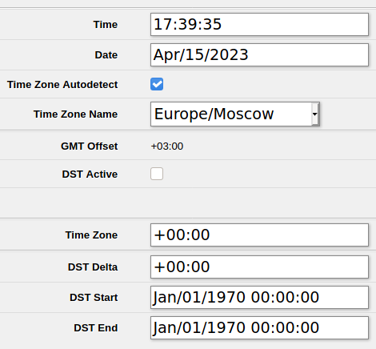

Иногда нужно проверить, какое текущее время в данный момент идет внутри роутера MikroTik hAP Lite.
Время в web-интерфейсе
Чтобы посмотреть текущее время в web-интерфейсе, надо выбрать в меню:
Меню - System - Clock
Будет отображено текущее время и дата. Так же в этом окне можно настроить таймзону (TimeZone), если она выставлена неправильно. Для этого необходимо снять галочку Time Zpne Autodetected. Текущее смещение относительно гринвича показывается в поле GMT Offset.

Текущее время в консоли
Команд типа time или date в MikroTik нет. Команда просмотра текущего времени в консоли MikroTik следующая:
system clock print
В ответ будет выведена подобная информация:
time: 17:42:27
date: apr/15/2023
time-zone-autodetect: yes
time-zone-name: Europe/Moscow
gmt-offset: +03:00
dst-active: no
Здесь, так же как и в Web-интерфейсе, выводится время и дата. А так же видно смещение времени относительно GMT, и временная зона. Поле dst-active переводится как Daylight saving time, по-русски это называется "Переход на летнее время". Это значение может быть включено/отключено, но зависит от выбранной таймзоны и от законодательства региона, к которому таймзона принадлежит (на момент подготовки прошивки роутера).